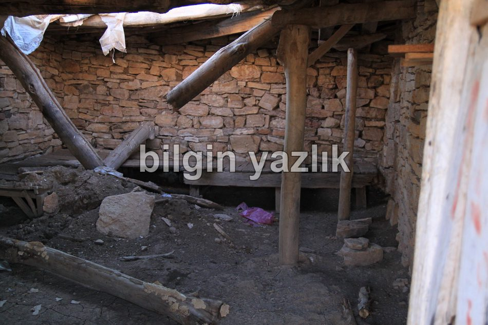
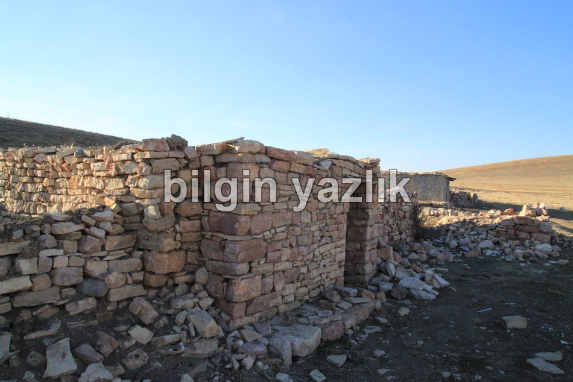
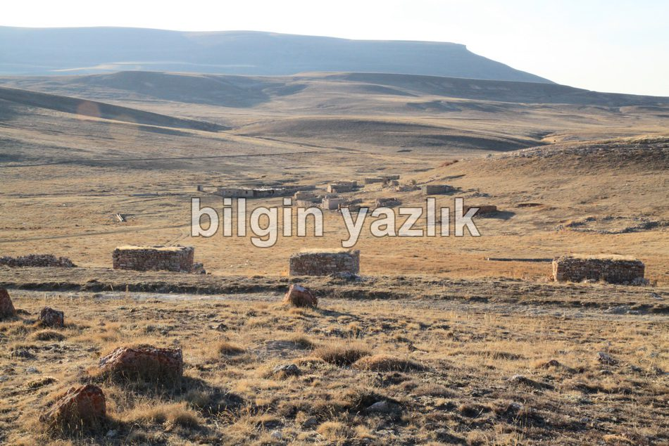

Koyunabdal Köyü Çitil Yaylası
Kayseri’nin Bünyan ilçesine bağlı Koyunabdal köyünün yaylasına aslında kaza eseri gittik. Taçın’da yer alan terkedilmiş demir madenini gezerken gözümüze evler ilişti, ancak burası öyle bir yerdi ki insanların yaşama ihtimali yoktu, merakımıza yenik düşerek bu evlere kadar gittik. Evlere yaklaştıkça manzara daha da ilginçleşmeye başladı zira oldukça düzenli bir köy haline büründü evler. Evet burası ziyaretimiz esnasında tek bir kişinin dahi yaşamadığı muhtemelen sadece yaz aylarında kullanılan bir yayla köyü idi. Ulaşımın berbat olduğunu hatırlatmak isterim. Köyün içinde çok sayıda çeşme var ve sürekli tatlı su akıyor. Köyde bir de mezarlık bulunuyor ve mezar taşlarının bazıları çok eski. İlginçtir köyde umumi bir WC ve güvenlik kulübesi var. Evlerin tamamı taştan yapılma ve çok eski, bazısı tamamen yıkılmış, bazısı ise harap halde, bazılarının ise kapısı kilitli idi ve içinde ev eşyaları bulunuyordu. Köyde elektrik, telefon ve GSM bulunmuyor. Bu terkedilmiş köy açıkçası beni ürküttü. Heyecan yaşamak için ziyaret etmenizi öneriyorum.



Bu yazı taliyol arşivinden taşınmıştır. · özgün kayıt